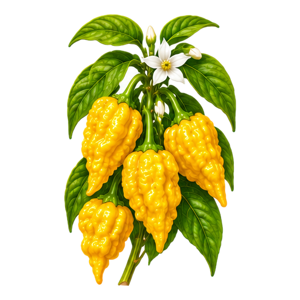
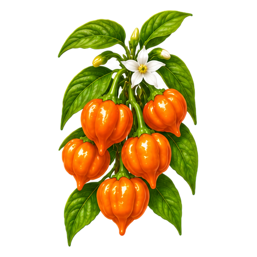
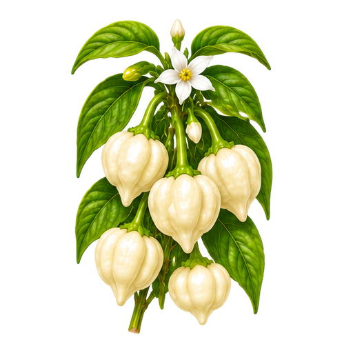
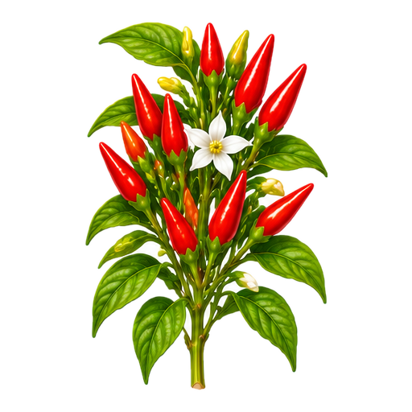
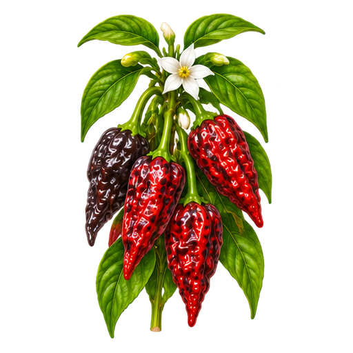
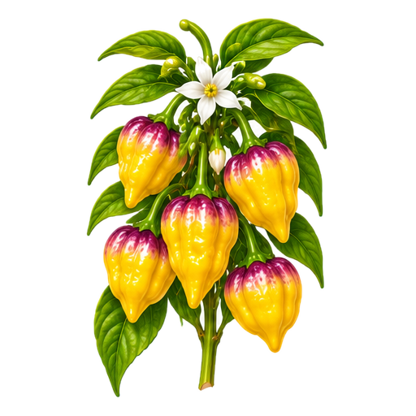

Naga Yellow
Rasmussen entry 179
PNGSource101–110 of 137 · Ten individual 512×512 transparent PNG concepts · Cultivar review pending

Rasmussen entry 179
PNGSource
Rasmussen entry 188
PNGSourceRasmussen entry 190
PNGSource
Rasmussen entry 191
PNGSourceRasmussen entry 194
PNGSource
Rasmussen entry 196
PNGSource
Rasmussen entry 198
PNGSourceRasmussen entry 199
PNGSourceRasmussen entry 202
PNGSource
Rasmussen entry 206
PNGSource